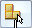

Parts List command bar
The options on the command bar are available for standard parts lists created with the Parts List command and for parts lists created with the Family of Assemblies Parts List command.
- Table Style
-
Lists and applies the available table styles.
See the help topic, Table styles.
- Link To Active
-
Creates multiple parts lists for the same drawing. All parts lists share the same item numbers.
Note:To link two parts lists, you first have to select the parts list you want to link to and use the Make Active command on its shortcut menu to designate it as the active parts list. Then, when you create another parts list, you can set the Link To Active option on the Parts List command bar to link them.
- From Selected Subassembly
-

Within the current assembly drawing view, selects a subassembly as the source for generating a parts list.The item numbers are based on the selected subassembly, and are generated on-the-fly when the parts list is built. However, if the Use assembly generated item numbers option is selected on the Options tab in the Parts List Properties dialog box, then the item numbers are retrieved from the subassembly model. If level-based item numbers are used, the selected subassembly is considered to be the top level assembly (level 1), and all subassemblies are sub-levels (level 2, level3).
- Auto-Balloon
-
 Adds balloons to the parts in a drawing view.
Adds balloons to the parts in a drawing view. - Place List
-
 Places the parts list on the drawing sheet. When this option is cleared, you can
still use the Parts List command to automatically add balloons to the drawing view.
Places the parts list on the drawing sheet. When this option is cleared, you can
still use the Parts List command to automatically add balloons to the drawing view. - Properties
-
Displays the Parts List Properties dialog box.
- Saved Settings
-
 Lists and applies the names of table formats you have saved.Tip:
Lists and applies the names of table formats you have saved.Tip:You can define new table formats on the General page of the Parts List Properties dialog box.
How do I
Create a parts listCreate a subassembly parts list
Create an exploded parts list
Create a total length parts list
Create a parts list for flexible hoses and tubing
Create a family of assemblies parts list
Exclude parts from an exploded parts list
Open a model from a parts list
Example: Show custom occurrence properties in a parts list
Example: Show custom properties and materials in a parts list
Example: Show sheet metal material thickness in a parts list
Renumber a parts list
Change the active parts list
Display assembly occurrences in a drawing view or parts list
Convert a parts list to a table
Copy a parts list to the clipboard
Learn more
Parts listsFamily of Assemblies (FOA) parts lists
Assembly part views and parts lists
Subassembly drawing views and parts lists
Exploded parts lists
Custom occurrence properties in parts lists
Occurrence quantity overrides in parts lists
Item numbers in parts lists
Saving and reusing the parts list format
Look up more details
Parts List commandParts List Properties dialog box
Copy Contents command
Convert To Table command